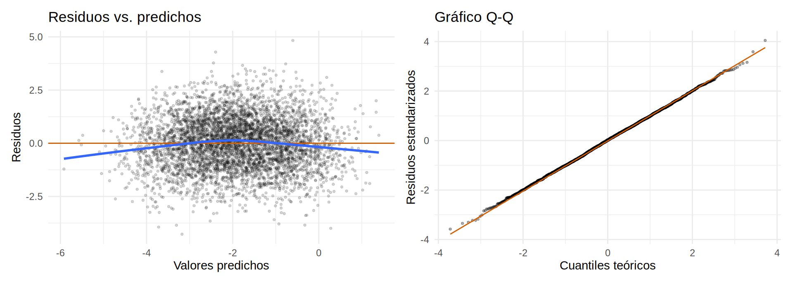
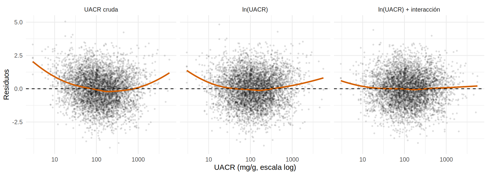
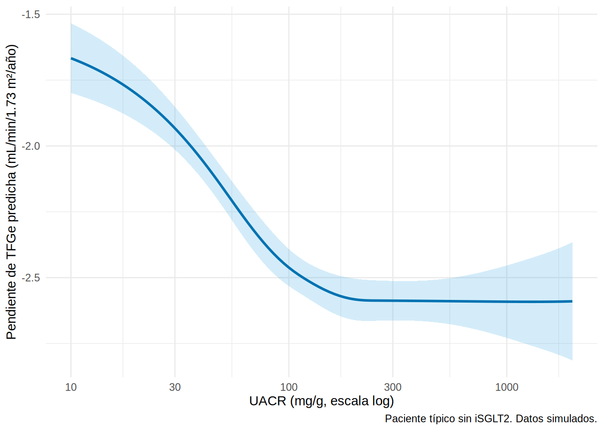

Supuestos, diagnóstico y no linealidad
Supuestos de la regresión lineal
| Supuesto | ¿Qué pasa si falla? | Cómo se revisa |
|---|---|---|
| Linealidad (la relación X–Y es recta en la escala usada) | Coeficientes y efecto sesgados | Residuos vs. cada variable |
| Independencia de las observaciones | Errores estándar demasiado pequeños | Conocer el diseño (pacientes por centro, mediciones repetidas) |
| Homocedasticidad (varianza constante de los residuos) | Errores estándar incorrectos | Residuos vs. predichos |
| Normalidad de los residuos | Poco importante con n grande; afecta intervalos de predicción | Gráfico Q-Q |
| Sin colinealidad extrema | Coeficientes inestables | Factor de inflación de varianza (VIF) |
| Sin puntos muy influyentes | Un paciente cambia el resultado | Distancia de Cook, DFBETA |
El que más importa para el sesgo es la linealidad; los demás afectan sobre todo la precisión.
Diagnóstico con gráficos
broom::augment() agrega a la base los valores predichos, residuos y la distancia de Cook:
m <- lm(pendiente_tfg ~ isglt2 + I(edad / 10) + sexo + hba1c + pas + tfg_basal + luacr + ecv, data = ckd)
a <- augment(m)
g1 <- ggplot(a, aes(.fitted, .resid)) +
geom_point(alpha = 0.15, size = 0.7) +
geom_hline(yintercept = 0, color = "#D55E00") +
geom_smooth(method = "loess", formula = y ~ x, se = FALSE) +
labs(x = "Valores predichos", y = "Residuos", title = "Residuos vs. predichos")
g2 <- ggplot(a, aes(sample = .std.resid)) +
stat_qq(alpha = 0.3, size = 0.7) + stat_qq_line(color = "#D55E00") +
labs(x = "Cuantiles teóricos", y = "Residuos estandarizados", title = "Gráfico Q-Q")
library(patchwork)
(g1 + g2) & theme_minimal(base_size = 11)
Cómo leer estos gráficos:
- Residuos vs. predichos: debe ser una nube sin forma alrededor de 0. Una curva indica no linealidad; un embudo, heterocedasticidad.
- Q-Q: los puntos sobre la recta indican residuos aproximadamente normales. Aquí lo son (los simulamos así).
Con plot(m) de R base se obtienen los cuatro gráficos clásicos en una sola llamada.
No linealidad: cuando la variable no entra “en línea recta”
El ejemplo clásico en nefrología es la UACR: es muy asimétrica y su efecto sobre la pérdida de TFGe se parece más a una función del logaritmo. Comparemos tres modelos y miremos el residuo frente a la UACR: con la UACR cruda, con su logaritmo y con el logaritmo más la interacción iSGLT2 × ln(UACR) que vimos en el 8.4.
m_cruda <- lm(pendiente_tfg ~ isglt2 + I(edad / 10) + sexo + hba1c + pas + tfg_basal + uacr + ecv, data = ckd)
m_log <- lm(pendiente_tfg ~ isglt2 + I(edad / 10) + sexo + hba1c + pas + tfg_basal + luacr + ecv, data = ckd)
m_loginter <- lm(pendiente_tfg ~ isglt2 * luacr + I(edad / 10) + sexo + hba1c + pas + tfg_basal + ecv, data = ckd)
bind_rows(
`UACR cruda` = glance(m_cruda), `ln(UACR)` = glance(m_log),
`ln(UACR) + interacción` = glance(m_loginter), .id = "modelo"
) |> select(modelo, r.squared, AIC) |> mutate(across(where(is.numeric), \(x) round(x, 3)))# A tibble: 3 × 3
modelo r.squared AIC
<chr> <dbl> <dbl>
1 UACR cruda 0.461 16121.
2 ln(UACR) 0.476 15982.
3 ln(UACR) + interacción 0.504 15706.bind_rows(
augment(m_cruda, data = ckd) |> mutate(modelo = "UACR cruda"),
augment(m_log, data = ckd) |> mutate(modelo = "ln(UACR)"),
augment(m_loginter, data = ckd) |> mutate(modelo = "ln(UACR) + interacción")
) |>
mutate(modelo = fct_inorder(modelo)) |>
ggplot(aes(uacr, .resid)) +
geom_point(alpha = 0.1, size = 0.6) +
geom_smooth(method = "loess", formula = y ~ x, color = "#D55E00", se = FALSE) +
geom_hline(yintercept = 0, linetype = "dashed") +
scale_x_log10() +
facet_wrap(~ modelo) +
labs(x = "UACR (mg/g, escala log)", y = "Residuos") +
theme_minimal(base_size = 11)
Tres etapas, tres lecciones:
- UACR cruda: la curva de residuos se aparta de 0 de forma sistemática (el modelo se equivoca de manera predecible según la albuminuria) y el AIC es el peor.
- ln(UACR): mejora mucho (AIC más bajo), pero queda un patrón en U. Ya no es un problema de la forma de la UACR, sino de un término que falta: el efecto del iSGLT2 depende de la albuminuria (8.4).
- ln(UACR) + interacción: la curva se aplana y el AIC baja otros ~275 puntos.
El coeficiente “principal” del iSGLT2 cambia entre modelos (1.25, 1.34), y en el modelo con interacción pasa a ser el efecto cuando ln(UACR) = 0 (no el efecto promedio): hay que usar avg_comparisons() (8.4) para volver a un efecto promedio. Una mala forma funcional deja confusión residual, y un patrón residual indica que “algo falta”, no cuál es el término que falta: siempre combina el gráfico con el conocimiento clínico.
Splines: dejar que los datos dibujen la curva
Cuando no sabes qué transformación usar, un spline ajusta una curva suave en tramos. Dos opciones:
-
splines::ns(x, df): spline natural, lineal en los extremos (más estable). -
rms::rcs(x, nk): spline cúbico restringido (el preferido en epidemiología clínica, con 3 a 5 nodos).
# A tibble: 1 × 2
r.squared AIC
<dbl> <dbl>
1 0.48 15949.## Curva ajustada de la UACR sobre la pendiente (otras variables en su valor típico)
nuevo <- tibble(uacr = exp(seq(log(10), log(2000), length.out = 100)), isglt2 = 0, edad = 64,
sexo = factor("Hombre", levels = levels(ckd$sexo)), hba1c = 7.8, pas = 135,
tfg_basal = 46, ecv = 0)
pred <- bind_cols(nuevo, as_tibble(predict(m_spl, nuevo, interval = "confidence")))
ggplot(pred, aes(uacr, fit)) +
geom_ribbon(aes(ymin = lwr, ymax = upr), alpha = 0.25, fill = "#56B4E9") +
geom_line(color = "#0072B2", linewidth = 1) +
scale_x_log10(breaks = c(10, 30, 100, 300, 1000)) +
labs(x = "UACR (mg/g, escala log)", y = "Pendiente de TFGe predicha (mL/min/1.73 m²/año)",
caption = "Paciente típico sin iSGLT2. Datos simulados.") +
theme_minimal(base_size = 11)
La curva es casi una recta en escala logarítmica: el spline “descubrió” lo que el logaritmo ya hacía. En un conjunto real, esta es la forma de comprobar que la transformación elegida es razonable.
¿Hay realmente no linealidad? Prueba formal
Si la TFGe basal entra con spline de 3 grados de libertad, ¿mejora el ajuste frente a la forma lineal?
Analysis of Variance Table
Model 1: pendiente_tfg ~ isglt2 + I(edad/10) + sexo + hba1c + pas + tfg_basal +
luacr + ecv
Model 2: pendiente_tfg ~ isglt2 + I(edad/10) + sexo + hba1c + pas + ns(tfg_basal,
3) + luacr + ecv
Res.Df RSS Df Sum of Sq F Pr(>F)
1 4991 7126.9
2 4989 7125.8 2 1.113 0.3896 0.6773No (p alto): para la TFGe basal la forma lineal basta (así la simulamos). Ajustar el spline y no encontrar curvatura también es un resultado útil.
- No dicotomices (“TFGe < 60”) para ajustar: pierdes información y dejas confusión residual dentro de cada categoría.
- Prueba transformaciones (log) y splines (3-5 nodos) para los confusores principales.
- Para la exposición, la forma funcional importa más (es lo que quieres estimar): una curva dosis-respuesta con spline es más informativa que una categoría.
- Con polinomios (
x + x²) centra la variable para evitar colinealidad artificial.
Colinealidad
Dos variables muy correlacionadas inflan la varianza de sus coeficientes. Se mide con el VIF: > 5-10 es preocupante.
vif(m_lin) isglt2 I(edad/10) sexoHombre hba1c pas tfg_basal luacr
1.196953 1.240197 1.003865 1.084496 1.061749 1.167319 1.213060
ecv
1.034262 Aquí todos los VIF son cercanos a 1. Un caso típico de colinealidad artificial es el polinomio sin centrar:
isglt2 tfg_basal I(tfg_basal^2) luacr
1.119725 50.993216 51.013401 1.092219 isglt2 I(tfg_basal - 46) I((tfg_basal - 46)^2)
1.119725 1.092902 1.000756
luacr
1.092219 - No afecta la predicción global, pero hace inestables los coeficientes individuales.
- No elimines un confusor importante solo por la colinealidad: es preferible un modelo con intervalo ancho que uno sesgado.
- No incluyas en el mismo modelo una variable y su derivada (creatinina y TFGe calculada a partir de ella): son redundantes.
Heterocedasticidad: errores estándar robustos
Cuando los residuos no tienen varianza constante (por ejemplo, mayor variabilidad en pacientes con mayor albuminuria), los coeficientes siguen siendo insesgados pero los errores estándar no. La solución simple es la varianza robusta (sandwich):
Estimate Std. Error t value Pr(>|t|)
clasico 1.3356 0.0370 36.0539 0
robusto 1.3356 0.0372 35.8899 0Con datos homocedásticos, ambos coinciden. Es recomendable usar el robusto por defecto en la regresión lineal observacional; si hay agrupación (pacientes por centro), usa vcovCL(m, cluster = ~centro).
Puntos influyentes
Un paciente con valores muy atípicos puede cambiar el modelo. Se detecta con la distancia de Cook:
# A tibble: 5 × 7
id pendiente_tfg tfg_basal uacr .fitted .resid .cooksd
<dbl> <dbl> <dbl> <dbl> <dbl> <dbl> <dbl>
1 3317 -7.66 20 120 -3.72 -3.94 0.0038
2 4320 2.28 66.6 1797 -1.26 3.54 0.0032
3 3406 4.23 56.5 18 -0.602 4.83 0.0032
4 2778 -0.27 56.8 94 -3.64 3.37 0.003
5 365 1.96 26 153 -1.29 3.25 0.0028Distancias de Cook muy pequeñas (< 0.01): ningún paciente domina. Si apareciera alguno > 0.5 o claramente separado del resto: (1) verifica que no sea un error de datos, (2) repite el análisis sin él como análisis de sensibilidad, (3) no lo borres automáticamente y reporta lo que hiciste.
Transformar el desenlace
Si el desenlace es positivo y asimétrico (UACR, días de hospitalización, triglicéridos), conviene modelar su logaritmo. Los coeficientes se interpretan como razones de medias geométricas:
razon 2.5 % 97.5 %
1.690003 1.595973 1.789574 Los pacientes con iSGLT2 tienen una UACR basal 1.7 veces mayor (media geométrica): es lo esperado, porque se les prescribe preferentemente a quienes tienen más albuminuria (confusión por indicación). Una diferencia de 0.5 en log(uacr) equivale a un 65 % más, y exponenciar el coeficiente evita errores de interpretación.
Y para la logística y Cox
-
Logística: linealidad en el logit (
ns()orcs()en los continuos), calibración (¿el riesgo predicho coincide con el observado?, Cap. 17), puntos influyentes y separación. La prueba de Hosmer-Lemeshow no se recomienda. - Cox: riesgos proporcionales (Cap. 9.4), linealidad de los log-HR y observaciones influyentes (residuos dfbeta).
- Revisa linealidad (la que más sesga), independencia, homocedasticidad, colinealidad e influencia.
- Los gráficos de residuos y el Q-Q son el primer filtro;
broom::augment()los prepara. - Una mala forma funcional de un confusor deja confusión residual en la exposición: transforma (log) o usa splines (
ns,rcs). - No dicotomices continuas para ajustar; centra al usar polinomios.
-
Errores robustos (
vcovHC,vcovCL) protegen frente a heterocedasticidad y agrupamiento. - No borres puntos influyentes sin investigar; haz un análisis de sensibilidad.
Ejercicio
- Ajusta el modelo con
rcs(luacr, 4)en lugar deluacry compara el AIC. ¿Cambia el coeficiente del iSGLT2? - Dibuja los residuos frente a la edad. ¿Hay patrón?
- Calcula el IC del coeficiente del iSGLT2 con
vcovHC(type = "HC3")y compáralo con el clásico.